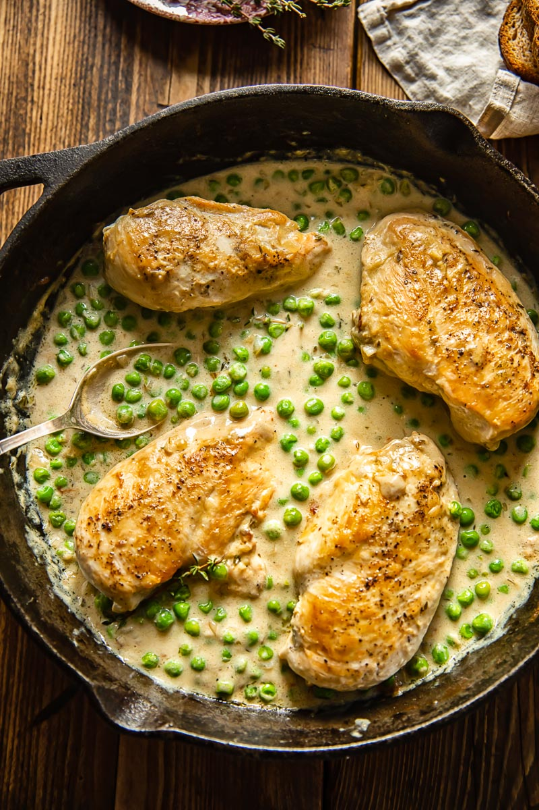

Chicken and Peas

This is a supremely easy and delicious recipe for chicken and green peas in a thyme-infused cream sauce.
Ingredients
- 1 tbsp olive oil
- 4 chicken breasts
- salt and pepper
- 1 shallot or 1/2 white onion
- 2 cloves garlic
- 1/2 tsp dried thyme
- 1/3 cup dry white wine
- 1 cup heavy cream
- 1/3 cup chicken stock
- 1 cup frozen green peas
Instructions
- Season the chicken breasts with salt and pepper, then brown in olive oil in a hot pan until golden on both sides but not cooked all the way through. Remove to a separate plate.
- To the pan add chopped shallot and cook over low heat for 5 minutes, then add the minced garlic and thyme, stir to combine and cook for half a minute, then deglaze with the white wine and let it simmer for 2-3 minutes to allow the wine to reduce in volume.
- Pour in the cream and chicken stock with a pinch of salt, then bring the chicken breasts back to the pan and let them cook in the sauce until done for 15 minutes. Then add in the frozen peas and cook for 2-3 minutes longer until the peas are warmed through. Taste for seasoning and add more salt if needed.